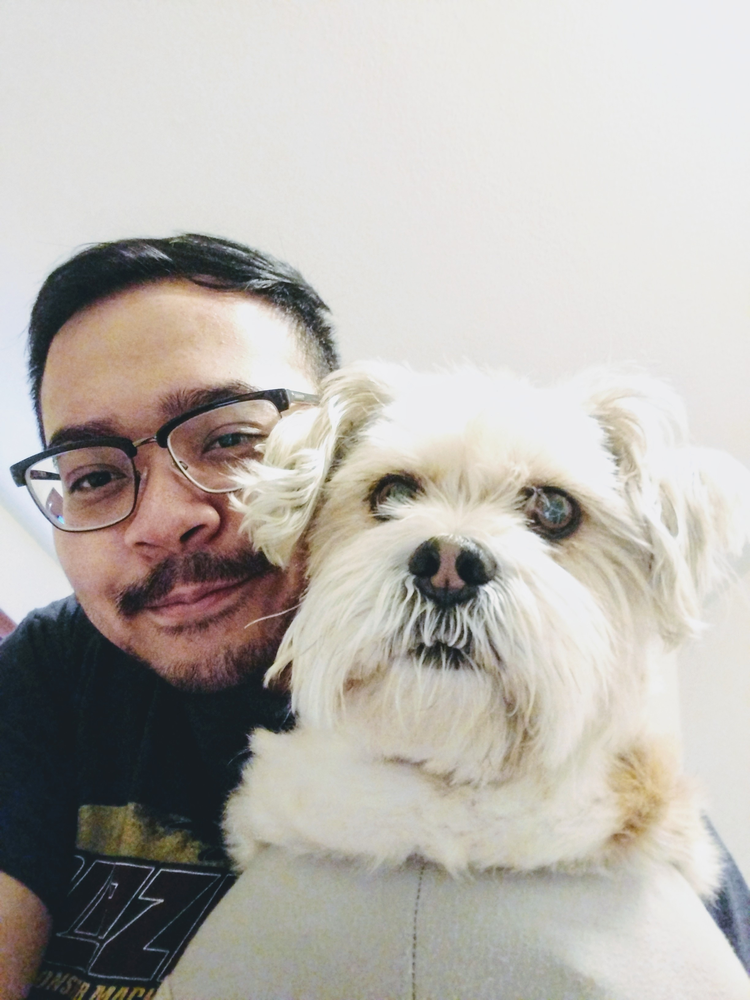

Kevin Vizconde
Kevin Vizconde was born in the Philippines.
Kevin was so eager to see the world that he rushed out of his mother before they could get to the hospital; thus, he was born inside the tiny home his parents built.
Kevin is the youngest child of Mr. and Mrs. Vizconde, he has one older sister. When Kevin was about a year old, his sister was pushing him in his stroller until one of the stroller's wheel hit a curb and the stroller flipped over while Kevin fell face first on concrete which gave him a deviated septum and an uneven nostril. Kevin was very prone to accidents when he was young.
Despite his misfortunes, Kevin still loves life...especially when he has a bottle of rum.
Kevin can be reached at kevin.vizconde@gmail.com